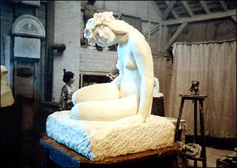
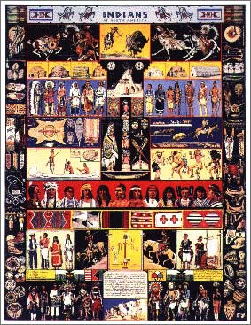
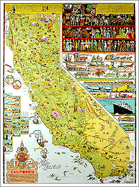

Joseph Jacinto “Jo” Mora, born 22 October
1876 in Uruguay, died 10 October 1947 in Monterey California, just short
of his seventy-first birthday.
Jo Mora came to the
United States as a child, he studied
art in the New York, then worked for Boston
newspapers as a cartoonist. He was a man of many other talents,
artist-historian, sculptor, painter, photographer, illustrator,
muralist and author. Later in life, he became quite a renown artist.
In 1903, Mora came to California, then in 1904 he moved to Keams Canyon in northeast Arizona,
living with the Hopi and Navajo Indians. He learned their languages and photographed and
painted an ethnological record, particularly of the Kachina ceremonial dances.
In 1907, he marred Grace Needham and they moved to Mountain View California. He moved
to Pebble Beach in 1922 and established a home and large studio there, it being
near the
Carmel
Mission (San Carlos Borroméo
De Carmelo Mission) after being
commissioned to do the
Serra Sarcophagus* for Padre (Father) Ramon
Mestres. The bronze and travertine marble sarcophagus showing Padre Serra lying in state with his friends
Padres Crespi, López, and Lasuén around him was unveiled on 12 October 1924. Note that
Padre Crespi died before Father Serra; Mora took a bit of artistic license here, but his work is
certainly in keeping with the spirit. (* Note that a sarcophagus is an above ground box or tomb that
contains a body. The memorial never contained Padre Serra’s remains. The correct
name for the monument is
Cenotaph.) Mora also worked in ceramics, wood and stone.
“
The Greeting” from 1928 is still a Carmel delight. Another of his
tributes to Padre Serra greets new arrivals to Carmel
(
detail).

Poppy Nymph or Poppy Girl, ca 1930
From the Studio: Jo Mora Exhibition
Maritime Museum,
Monterey California, 2004.
Photo © Patty Sokolecki Smoot.
During his long and productive career, Mora illustrated a number of books
including
Animals of Aesop (1900),
Dawn and the Dons -
The Romance of Monterey (1926),
Benito and Loreta Delfin, Children
of Alta California (1932), and
Fifty Funny Animal Tales (1932).
He authored three books,
A Log of the
Spanish Main (1933),
Trail Dust and Saddle Leather (1946) and
his posthumous publication,
Californios (1949).
Cartes (charts, maps, posters) include
California,
first version (1927),
Grand Caynon (1931),
Yosemite (1931),
Ye Old Spanish Main (1933),
Indians of North America (1936) (see below),
Carmel-By-The-Sea (1942)
The American Cowboy Rodeo, a.k.a.
Salinas Rodeo,
Sweetheart of the Rodeo
(
Detail) (1932),
California (1945) (large and small versions),
Map of Los Angeles (1942),
Salinas Rodeo (Levi version, 1950),
Monterey Penninsula (date unknown),
and
Seventeen Mile Drive (date unknown) (Pebble Beach). His
cartes are extremely collectible.
In 1996, the Book Club of California selected Mora as one of the
state’s outstanding book illustrators. Mora is also listed in Jeff Dykes’
Fifty Great
Western Illustrators: A Bibliographic Checklist.


Please do
not send emails to me with questions about the various editions of
Jo Mora’s work or about the value of those editions. I do not specifically collect
original Jo Mora cartes and I am disinterested in how much profit may be made by selling
an original Mora carte. Be aware that the publication rights to certain cartes were sold by
Jo N. Mora (the artist’s son) to Jim Meyer Graphics, Inc., so therefore, the Meyer
reprints are legal and authorized. The reprints are excellent.
The 2005 retail price of authorized reproduction cartes
usually is in the thirty-five to forty dollar range, while a pristine (unfaded,
untorn, unfolded, etc.) original carte may run as high as twelve hundred dollars.
Notes:
1. All images that appear on this page are used under the
Fair Use provisions of United States copyright law, and are presented in
this non-commercial venue strictly for pubic benefit (educational). All images
appearing here are presented in low resolution and as thumbnail versions and have
no commercial value. Be aware that any of Jo Mora’s work that was published after
1922 may still be in copyright.
All images here were either scanned or photographed
digitally from items in my collection, photographed by my wife Patty Smoot in Monterery
and Carmel, or contributed by friends.
2. Used copies of Jo Mora’s books may often be found at
Antiquarian Book Dealers. Many of those dealers offer their holdings through Advanced
Book Exchange (ABE). A search of the
ABE website
is recommended.
3. The
Pat
Hathaway Collection of Historical Photos offers for sale, over 100 images by Lewis Josselyn
of Jo Mora at work.
4. Today, you can see in Golden Gate Park (San Francisco CA),
the Jo Mora sculpture of Don Quixote and his squire, Sancho Panza kneeling before and paying homage
to the bust of their creator, Don Miguel of Cervantes Saavedra (Cervantes).
(Area temporarily closed during construction of the new but grossly uninspired
de Young Museum.)
5. Jo Mora’s book,
A Log of the
Spanish Main, was purchased by the Grace Steamship
Line (W. R. Grace & Co.) and they offered it to their passengers. The pages could
be changed to conform to different routes
sailed, and ample space was provided for the passengers to write in their experiences. Therefore each
used copy is unique and charming.
6. Two excellent sources for identifing most if not all
of Jo Mora’s work is
Collecting Jo Mora by Joss Grandeau and
Don Short, 1995, and
Back to the Drawing Board with Artist Jo Mora, by Julianne
Burton-Carvajal, 2003, Noticias del Puerto Monterey, Quarterly Bulletin
of the Monterey History and Art Association.
{kind=link}
{kind=link}
{kind=link}
{kind=link}
{kind=link}
{kind=link}
{kind=link}
{kind=link}
{kind=link}
{kind=link}
{kind=link}
{kind=link}
{kind=link}